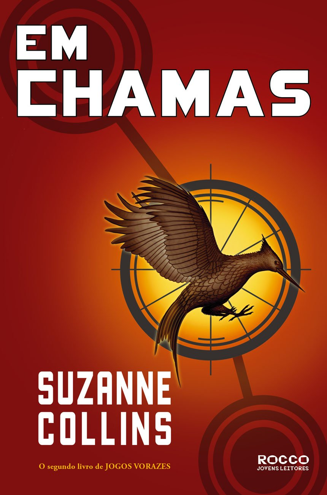

Título: Jogos Vorazes Em Chamas.
Ano de Publicação: 01/09/2009.
Editora: Rocco.
Número de Páginas: 416.
Sinopse: Depois da improvável e inusitada vitória de Katniss Everdeen e Peeta Mellark nos últimos Jogos Vorazes, algo parece ter mudado para sempre em Panem. Aqui e ali, distúrbios e agitações nos distritos dão sinais de que uma revolta é iminente. Katniss e Peeta, representantes do paupérrimo Distrito 12, não apenas venceram os Jogos, mas ridicularizaram o governo e conseguiram fazer todos – incluindo o próprio Peeta – acreditarem que são um casal apaixonado. A confusão na cabeça de Katniss não é menor do que a das ruas. Em meio ao turbilhão, ela pensa cada vez mais em seu melhor amigo, o jovem caçador Gale, mas é obrigada a fingir que o romance com Peeta é real. Já o governo parece especialmente preocupado com a influência que os dois adolescente vitoriosos – transformados em verdadeiros ídolos nacionais – podem ter na população. Por isso, existem planos especiais para mantê-los sob controle, mesmo que isso signifique forçá-los a lutar novamente. Apenas um sobrevive.
Ano de Publicação: 01/09/2009.
Editora: Rocco.
Número de Páginas: 416.
Sinopse: Depois da improvável e inusitada vitória de Katniss Everdeen e Peeta Mellark nos últimos Jogos Vorazes, algo parece ter mudado para sempre em Panem. Aqui e ali, distúrbios e agitações nos distritos dão sinais de que uma revolta é iminente. Katniss e Peeta, representantes do paupérrimo Distrito 12, não apenas venceram os Jogos, mas ridicularizaram o governo e conseguiram fazer todos – incluindo o próprio Peeta – acreditarem que são um casal apaixonado. A confusão na cabeça de Katniss não é menor do que a das ruas. Em meio ao turbilhão, ela pensa cada vez mais em seu melhor amigo, o jovem caçador Gale, mas é obrigada a fingir que o romance com Peeta é real. Já o governo parece especialmente preocupado com a influência que os dois adolescente vitoriosos – transformados em verdadeiros ídolos nacionais – podem ter na população. Por isso, existem planos especiais para mantê-los sob controle, mesmo que isso signifique forçá-los a lutar novamente. Apenas um sobrevive.
Personagens Principais

Katniss Everdeen

Peeta Mellark

Finnick Odair

Johanna Mason